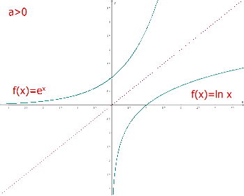
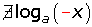

Funciones logarítmicas
Funciones logarítmicas
La función logarítmica en base a es la función inversa de la exponencial en base a.
1.
| x | |
|---|---|
| 1/8 | -3 |
| 1/4 | -2 |
| 1/2 | -1 |
| 1 | 0 |
| 2 | 1 |
| 4 | 2 |
| 8 | 3 |
2.
| x | |
|---|---|
| 1/8 | 3 |
| 1/4 | 2 |
| 1/2 | 1 |
| 1 | 0 |
| 2 | −1 |
| 4 | −2 |
| 8 | −3 |

Propiedades de las funciones logarítmicas
Dominio: 
Recorrido: 
Es continua.
Los puntos (1, 0) y (a, 1) pertenecen a la gráfica.
Es inyectiva (ninguna imagen tiene más de un original).
Creciente si a>1.
Decreciente si a<1.
Las gráfica de la función logarítmica es simétrica (respecto a la bisectriz del 1er y 3er cuadrante) de la gráfica de la función exponencial, ya que son funciones reciprocas o inversas entre sí.

Definición de logaritmo

Siendo a la base, x el número e y el logaritmo.


1.
2. 

3. 
4. 
5.
De la definición de logaritmo podemos deducir:
No existe el logaritmo de un número con base negativa.
No existe el logaritmo de un número negativo.

No existe el logaritmo de cero.

El logaritmo de 1 es cero.

El logaritmo en base a de a es uno.
El logaritmo en base a de una potencia en base a es igual al exponente.
Propiedades de los logaritmos
1. El logaritmo de un producto es igual a la suma de los logaritmos de los factores.
2. El logaritmo de un cociente es igual al logaritmo del dividendo menos el logaritmo del divisor.

3. El logaritmo de una potencia es igual al producto del exponente por el logaritmo de la base.


4. El logaritmo de una raíz es igual al cociente entre el logaritmo del radicando y el índice de la raíz.

5. Cambio de base:


Logaritmos decimales
Son los que tienen base 10. Se representan por log (x).
Logaritmos neperianos
Son los que tienen base e. Se representan por ln (x) o L(x).